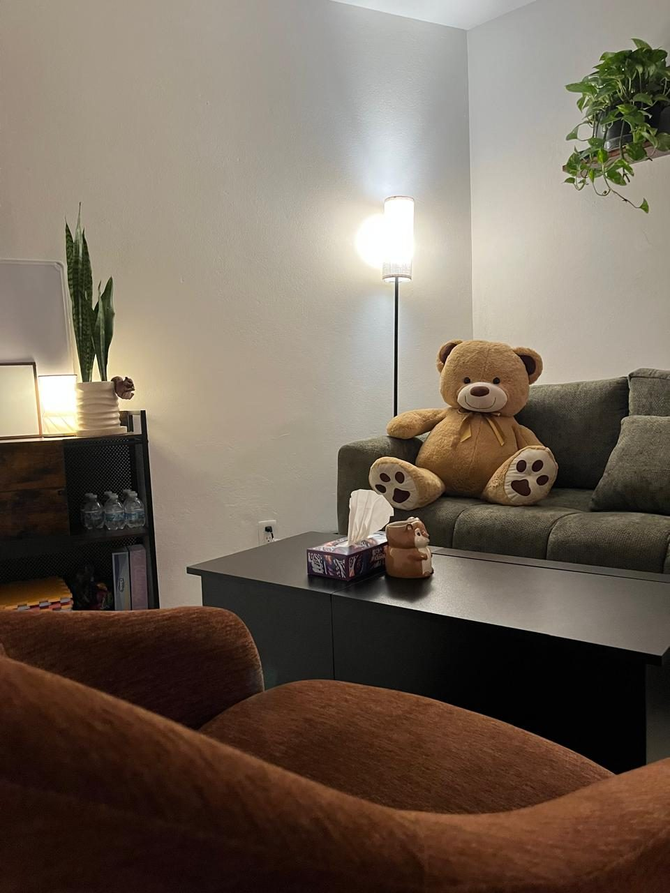
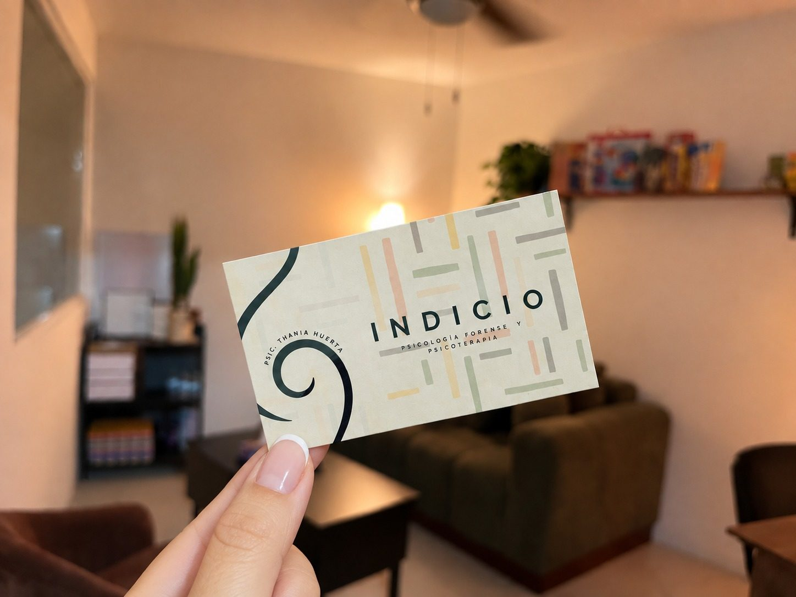

Metapericiales
Revisión técnica de un dictamen ya emitido, para valorar su método y sus conclusiones.
En INDICIO brindo atención psicológica especializada a adolescentes y juventudes, así como servicios de evaluación e intervención en el ámbito de la psicología forense. Colaboro con personas, familias, instituciones y profesionales del ámbito jurídico.
Psicología forense y psicoterapia
Servicios
En INDICIO se trabaja con perspectiva de derechos humanos, género, infancia y adolescencia, además de la aplicación del análisis de contexto y enfoque diferencial.
Otros servicios
Revisión técnica de un dictamen ya emitido, para valorar su método y sus conclusiones.
Acompañamiento sobre el componente psicológico de un asunto.
Lectura del entorno en el que ocurren los hechos, con enfoque diferencial.
Cuéntame el asunto y la fecha límite, y te devuelvo el alcance y el costo.
Psicoterapia
Consulta para adolescentes y juventudes. Si lo que te pasa no está en la lista, escríbeme igual.
El enfoque terapéutico que se maneja en INDICIO es la Terapia Cognitivo Conductual.
Conoce a tu psic.
¡Hola! Soy Thania Huerta, psicóloga con formación y experiencia profesional en los ámbitos clínico y forense. Dentro del área forense trabajo principalmente en materia familiar, lo que me ha permitido comprender las distintas situaciones y necesidades que pueden presentarse en las familias. En el área clínica, mi práctica está dedicada al acompañamiento de adolescentes y juventudes.
Elegí trabajar con esta población porque considero que es un momento decisivo en la construcción de las personas adultas del futuro. Acompañarlos oportunamente puede generar cambios importantes en el presente, mientras desarrollan su identidad y su propia manera de relacionarse con el mundo.
Mi experiencia clínica me permite crear espacios de crecimiento, cuestionamiento y desarrollo personal. Por su parte, mi formación forense me ha enseñado a comprender a cada persona dentro de un contexto más amplio. Aunque ambos ámbitos tienen objetivos y límites diferentes, juntos enriquecen mi manera de comprender el comportamiento humano.
Disfruto estudiar y mantenerme en constante actualización. Procuro que mi trabajo se sustente en evidencia científica, pero también creo que la terapia puede ser cercana y creativa: disfruto crear materiales y adaptar actividades y herramientas a la personalidad, los intereses y las necesidades de cada consultante.
Creo que la terapia puede ser cercana y creativa.
Formación
Consultorio
Abre la ruta directo en tu aplicación, o mueve el mapa para reconocer la zona.
No se pudo cargar el mapa.




Cuéntame qué necesitas y te digo si puedo ayudarte. Si es un asunto legal, pídeme una cotización; si es para consulta, agendamos.